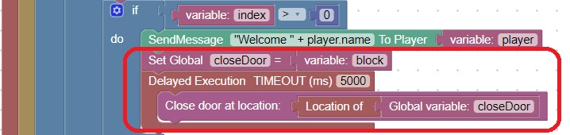

Maze Enhancement, Automatically close the door
Since there may be multiple players in the maze, it would be nice to close/lock the door after it has been opened by
a player with the correct key
In World, Blocks, Door there is a block that will allow you to close the door
Adding this code where you send the Welcome message will automatically close the door after 5 seconds

To test this code open the door and wait 5 seconds, it should close automatically
Note: You can change the timeout to a different value, but you should at least give the player a few seconds to get through the door
Minecraft Issue: Spawn Protection
The is something called spawn protection which inhibits the opening of doors when they are within 16 blocks of the spawn point.
If you are having trouble opening a door it could also be due to this feature
To disable spawn-protection, edit the server.properties file and change spawn-protection=16 to spawn-protection=0